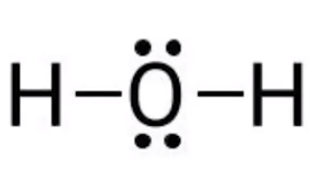
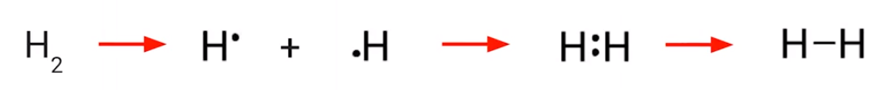
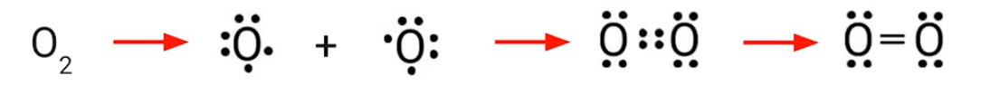
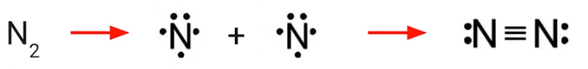
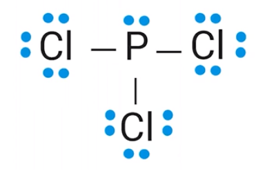
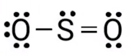
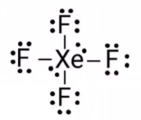

How are molecules represented?
Molecular formulas (H2O, etc)
Lewis Diagrams: graphical representation
Lewis diagrams are models
Represent chemical substances
Show how the atoms connect
Show the bond order (single bond, double bond) between atoms
Shows valence electrons not participating in bonding
Example: Lewis diagram for water:
{width="2.2708333333333335in" height="1.21875in"}
H and O: Chemical symbols of hydrogen and oxygen
Lines: bonds between hydrogen and oxygen
1 line = single bond, ...
Represents a pair of shared electrons
1 from hydrogen, 1 from oxygen
<!-- -->
Dots: valence electrons not participating in bonding
<!-- -->
Lewis diagrams can also be made for individual atoms:
Dots are used to represent the number of valence electrons in an atom
Show only valence electrons
<!-- -->
For nitrogen:
{width="0.5520833333333334in" height="0.59375in"}
5 valence electrons
<!-- -->
An atom can only form as many bonds as it has valence electrons
Lithium can only form 1 covalent bond as it only has one valence electron to share, ...
Carbon can form up to 4 covalent bonds
Only lone electrons can form bonds
Therefore, oxygen cannot form 6 bonds
However, it can form two (2 missing electrons in outer shell => 2 lone electrons)
{width="6.333333333333333in" height="0.6354166666666666in"}
{width="6.34375in" height="0.59375in"}
Each oxygen has two lone pairs, therefore a double bond forms as there are no other elements present to bond with
How do we know a double bond is formed?
{width="5.78125in" height="0.6770833333333334in"}
Nitrogen: three lone pairs, no other elements to bond with, so a triple bond is formed
Bond energy of N2 is significantly larger than that of oxygen and fluorine
The Octet Rule
Atoms will (usually) form covalent bonds so that they have eight electrons around them
Carbon forms 4 bonds => eight electrons
Nitrogen forms 3 bonds and has a pair => 3 * 2 = 6, + 2 in pair = 8
However, there are some exceptions
How to construct Lewis Diagrams: (example: PCl3)
Count the total number of valence electrons
Determine the central atom
Usually,
Written first, or
The "odd one out" (single atom with 2, 3, 4 others), or
The least electronegative atom
P is the central atom
Place others around it and join with single bonds
Calculate the number of electrons that are used by the single bonds
3 single bonds, 3 * 2 = 6 electrons used
Therefore, we have 26 - 6 = 20 electrons left over
Add remaining electrons as electron pairs (dots) in the molecule
{width="2.6666666666666665in" height="1.71875in"}
<!-- -->
Form double or triple bonds if necessary
Do this when the central atom does not have an octet
{width="1.8125in" height="0.7604166666666666in"}
<!-- -->
Count all bonds and make sure there are the correct number of electrons
3 single bonds = 3 * 2 = 6
(3 * 6) + 2 free pairs = 20
20 electrons in free pairs + 6 electrons in bonds = 26 electrons
For ions (polyatomic):
{width="6.979166666666667in" height="0.3541666666666667in"}
Example: NH4^+^ has 1 fewer electron available to construct the dot structure
SO4^2-^ has 2 more electrons available to construct the dot structure
Put square brackets around the entire structure with the charge as superscript
<!-- -->
When there are extra electrons and multi-bonds cannot be formed
If the central atom is in period 3 and above, it gets the extra electrons
{width="1.9791666666666667in" height="1.6770833333333333in"}